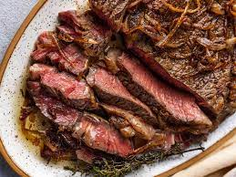

Main Page

Description
Simple yet delicious steak recipe will have your guests drooling on dinner night.
Ingredients
- 12oz steak
- Butter and olive oil
- Garlic and Onion
- Salt and Pepper
Steps
- Heat up a frying pan to medium-high heat
- Add in about 1-2 tblspoon of Olive oil
- When the oil is near smoking, gently add in the steak
- let the steak sit for 1-4 minutes depending how you like your steak
- Season your steak with salt and pepper and add in your butter, garlic and onions to add flavor
- After the amount of time to your liking has passed flip the steak over to the other side
- Plate and let it rest before cutting
- Enjoy!